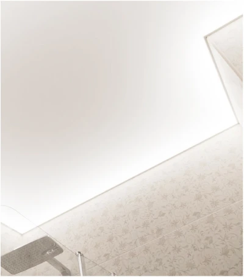
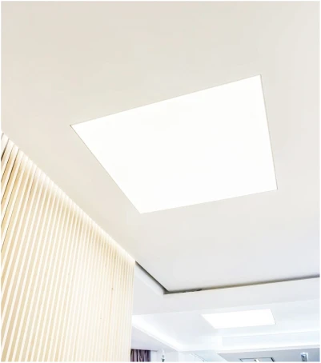

<div class="product_solutions">
	<div class="wrapper">
		<h2 class="title">Мы предлагаем 3 решения для световых потолков:</h2>
		<div class="description">
			<p>Вы получите не просто натяжной потолок, а полноценное освещение помещения без люстр, торшеров и светильников</p>
			<p><b>Управлять таким освещением можно и с клавиши, и с пульта</b></p>
		</div>
		<div class="body">
			<div class="item">
				
				<p>Подсветка по периметру</p>
			</div>

			<div class="item">
				
				<p>Сплошной засвет (световые окна)</p>
			</div>

			<div class="item">
				
				<p>Световые модули в потолке</p>
			</div>
		</div>
	</div>
</div>